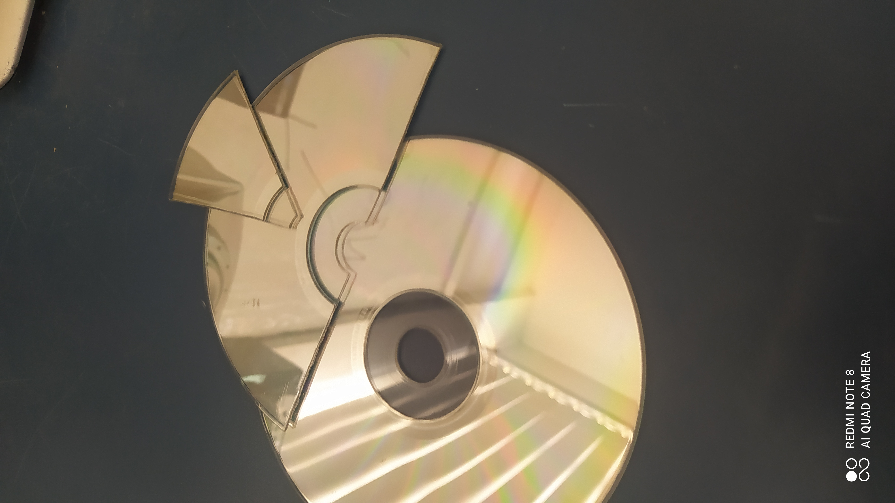

Porta objetos com disquetes:
1° passo: Junte os 5 disquetes que serão necessários para a produção do porta objetos.
2° passo: Pegue 1 dos disquetes e cole-o com cola quente na lateral de outro, prestando atenção na posição e no lado.
3° passo: Após isso, pegue mais 1 disquete e cole-o da mesma manira, na lateral do outro.

4° passo: Para finalizar as paredes do porta objetos como os 4 disquetes colados um no outro formando uma espécie de quadrado.

5° passo: Com as paredes feitas pegue o 5° e último disquete e cole-o no fundo do quadrado para fechar o fundo do nosso porta objetos.

6° passo: Após todas essas etapas seu porta objetos está finalizado e pronto para ser utilizado!

Registros do resultado final do porta objetos:


Suporte de celular com CD/DVD:
1° passo: Para essa produção vamos precisar de 2 CDs/DVDs.

2° passo: Com 1 deles em mãos, marque o meio dele e corte-o.

3° passo: Depois de cortar, você vai ter esse conjunto de partes.

4° passo: Com 1 das metades você vai fazer o mesmo processo de cortar ao meio.

5° passo: E de novo você pega a metade que acabou de cortar e faça mais um outro corte ao meio.

6° passo: Com isso você vai ter em mãos esse conjunto de peças.

7° passo: De todas essas partes, vamos precisar apenas dessas 3.
8° passo: Com as peças cortadas que sobraram e que não vão ser usadas, você vai precisar cortar esses pedaços em 3 retângulos como esses na imagem.

9° passo: Pegue apenas o pedaço menor de todos e cole ele no CD inteiro dessa maneira.

10° passo: Essa colagem vai resultar na seguinte peça. Lembre de verificar se todos os pedaços estão em mãos.

11° passo: Agora cole a meia lua do CD no outro conjunto, colando da seguinte forma, apoiando no CD inteiro e na peça de apoio.

12° passo: Agora cole o primeiro retângulo na base do CD. Ele vai servir como um apoio para o celular.
13° passo: Depois cole o segundo retângulo em cima do primeiro da seguinte maneira.

14° passo: Pegue o terceiro pedaço em forma de retângulo e cole em cima dos demais da mesma maneira. Assim, terminando a montagem do seu porta celular.
Registros do resultado final do suporte de celular: